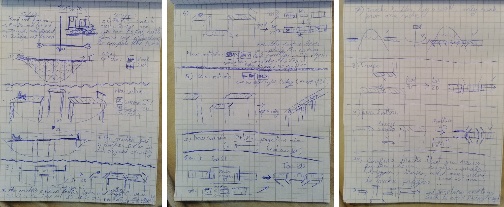
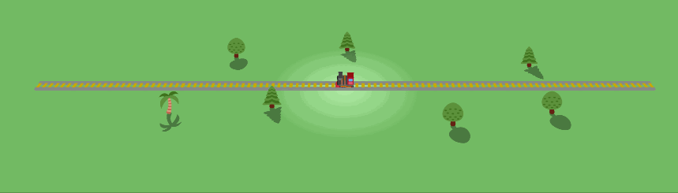
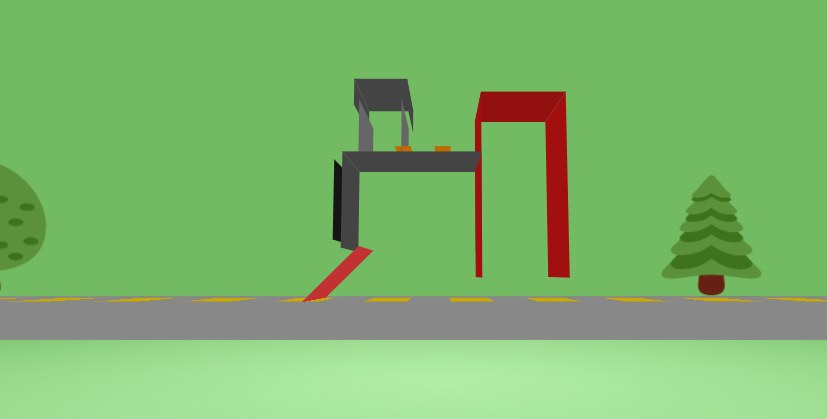
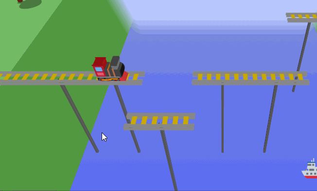
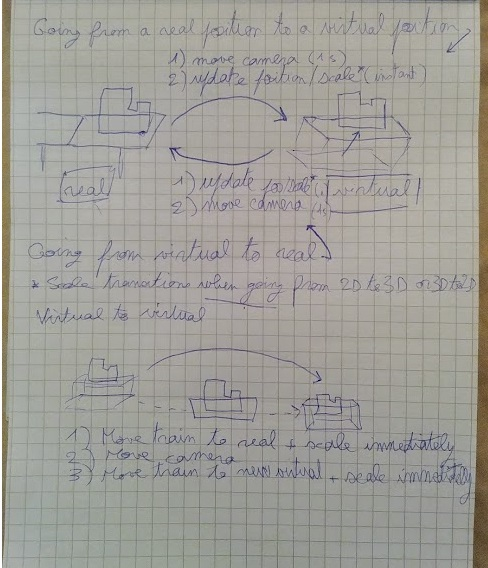
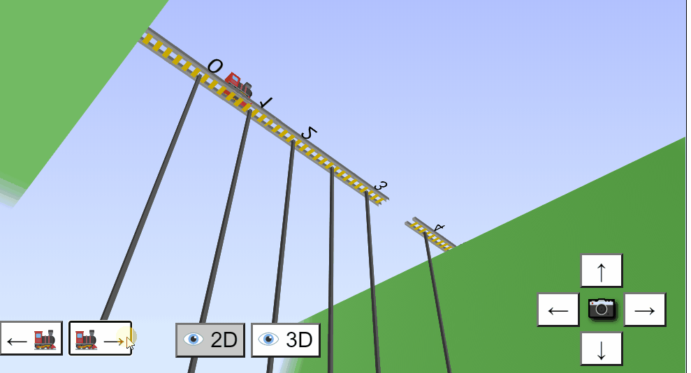
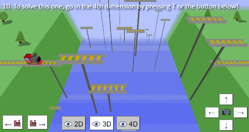
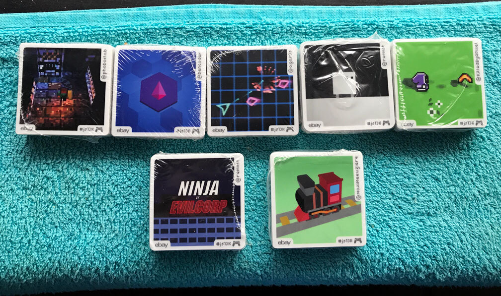

JS13kGames 2020: Track not Found ?!
August-September 2020

- Play the game
- Github repo
- Results: #2 in innovation, #3 on Mobile, #4 Overall and #7 in WebMonetization category!
Similar projects
If you discover my work today, here are my latest notable code-golfed / CSS3D / emoji projects that you may also like:
- Can I haz 1Karrot? (js1k 2017)
- LOSSST (js13kgames 2017)
- SN1KE (LOSSST demake, js1k 2018)
- Geoquiz 2 (js13kgames 2018)
- Emojysics! (js1k 2019)
- Peach1Kastle (js1k 2019)
- MiniTwo3D (js1k 2019)
- Mini Riding Light (js1k 2019)
- Mini Mandelbox (js1k 2019)
- Back on track (mania) (Trackmania demake, js13kgames 2019)
- Shift 2k20 (Shift demake, 2kplus jam 2020)
Before the jam
This year, I didn't prepare a list of ideas and didn't create new tools before the start of the compo.
I wanted to create everything between August 13th and September 13th.
Three of my tools from the previous years have been updated though:
- Emoji, my cross-browser build of Twitter's Twemoji webfont, useable as fallback in any js13k entry.
- Terser-online, my online ES6 minifier that received many great UI/UX contributions on Github in the last few months.
- GameAudioBundleMP3 now contains a folder with all the sound effects < 13kb, in different qualities (128 / 96 / 48kbps).
- CSS3Dframework got cleaned up and received more features.
Besides that, I wrote a recap of all the tips, tricks and traps that I learned during the last 6 years of JS13kGames.
You can read it here as a Twitter thread, or here unrolled.
Thread of tips and tricks for your next @js13kGames entry (2020 edition starts on august 13th, lasts 1 month, and has a theme, a jury and awesome prizes to win) 🤠
— xem 🔵 (@MaximeEuziere) July 26, 2020
Unroll
Until the start of the compo, I've been working on my WebGL guide, but didn't end up using this language for my 2020 entry.
I also made a new speedrun of my 2016 entry Super Chrono Portal Maker in this thread.
When the compo started, I tweeted daily updates in a Twitter thread, that I will explain in detail in this making-of.
Let's go!
Days 1 - 3: brainstorming
The competition started on a thursday, so I decided to take the end of the week to think about ideas that could fit the theme 404, and get started the next monday.
On day 1, I prepared my working folder (it's important):
#JS13k 2020 day 1: it's something.
— xem 🔵 (@MaximeEuziere) August 13, 2020
(I actually have some ideas) pic.twitter.com/vMl2F2VlhU
I also imagined a kind of adventure game where all the graphics would be replaced by placeholder images like the ones that browsers display when they can't find a file...
So my game could be some kind of big joke where every asset ends up being shown as a broken image...
— xem 🔵 (@MaximeEuziere) August 13, 2020
Title screen prototype#js13k pic.twitter.com/1Vw9XzaG15
... but it didn't inspire me enough.
Moreover, a nice entry used a similar concept, so no regrets!
One thing was sure: I really wanted to make a game that uses Emoji.
Though, I remembered all the problems I had in 2018 when I wanted to use Emoji flags in my game Geoquiz 2, so I decided to solve that first. I tried many approaches, but none of them was satisfying, until Lance Erwing kindly pointed me to the Twemoji webfont built by Mozilla, that actually worked seamlessly on every browser... (except Safari, which doesn't seem to accept any form of color Emoji webfont :/)
Day 3:
— xem 🔵 (@MaximeEuziere) August 15, 2020
Thanks to @lance_ewing, I found a better version of Twitter's Emoji webfont, built by Mozilla, which seems to work everywhere. And it's much smaller than the previous ones (1.2Mb vs 9Mb)!
Here's the updated emoji resource:https://t.co/bPnorv3YSr pic.twitter.com/dMl4MJPhuE
For my game, I was actually torn between my desire to make a chill game (à la Animal Crossing, where the world would be full of living emoji) and a puzzle game. So I made a poll...
Now, back to my entry!
— xem 🔵 (@MaximeEuziere) August 14, 2020
(I needed to have this emoji stuff sorted out before continuing 🤓)
It'll be either a puzzle game, or a relaxing game à la Animal Crossing.
What do you prefer?#js13k
... and, hum, by lack of interesting ideas, I didn't listen the results and decided to make a puzzle game anyway 🙃.
(Many other entries consist of chilling / playing in a world made of emoji, so once again, no regrets!)
And just before the end of the week-end, I finally found my idea, by scribbling on a notepad in my garden!
I'm at the same place and with the same notepad as 2017 when I got the idea of LOSSST. Time to scribble and find a fun game to make 💪#js13k pic.twitter.com/uv5w8PUPYN
— xem 🔵 (@MaximeEuziere) August 15, 2020
In exclusivity, here are the three pages of notes I wrote that day.
If you played the game already, you should recognize the first levels, plus some elements that never made it in the final game:

(click to enlarge)
{kind=link}
I wanted to make a game about perspective for a long time, and it was the right moment to do it!
Of course, a lot of inspiration came from the fantastic indie games FEZ and Monument Valley 1 and 2,
even though I wanted to revisit the idea in my onw way, and try new angles.
At this moment though, my main concern was to find a way to represent a 3D locomotive... out of an emoji. 🚂
This requirement alone got me busy for a couple days!
Days 4 - 6: inventing the volumetric emoji™
I started by updating my CSS3D framework to make it display shaded faces, and started working on a little scene with a track and a (flat) train emoji:
Day 4: I updated my CSS3D mini-framework to remove useless stuff, improve the doc, and add support for optional "shaded" cubes and pyramids (via different face colors):
— xem 🔵 (@MaximeEuziere) August 16, 2020
> https://t.co/qDYNiq7x9s
In the GIF below:
- The new website's demo
- The Bob-omb demo
- My #js13k WIP... :p pic.twitter.com/H1Cl1JPIZI
I was curious to see how it would look if I stacked a dozen similar emoji like a sandwich. It turned out very well... except when it's seen from the side.
Did I just invent volumetric emoji?
— xem 🔵 (@MaximeEuziere) August 16, 2020
...
No, I just stacked a dozen 🚂 emoji and hoped for the best. the trick is apparent when the camera is behind the vehicle.
The result is oddly satisfying though, on the other angles!
(also, I loaded the Twemoji Webfont)#js13k #css3d pic.twitter.com/tChsBMFUnH
To avoid seeing the gaps in the middle of the shape and give it a bit more volume, I decided to fill it with three cuboids (representing the body, chimney and cabin of the locomotive):
Re: Volumetric emoji:
— xem 🔵 (@MaximeEuziere) August 16, 2020
I wanted to let my camera see the locomotive in every angle (front, back, top...) without the annoying flat layers.
So I filled it with 3 cuboids (1 red, and 2 greys).
This gif shows the cuboids, then the full shape (cuboids+emoji).
It's better. 🤓#js13k pic.twitter.com/JscRRaNpQA
It was becoming interesting but something was still wrong: the pile of emoji at the center of the locomotive didn't look right, so I removed them completely, and instead, represented the interior with a few more 3D shapes (4 cuboids and 3 colored planes), while keeping the emoji for the front face and the back face only, like an ice-cream sandwich:
Day 5:
— xem 🔵 (@MaximeEuziere) August 17, 2020
I wasn't totally happy with the multi-layer emoji, so here's a new approach: "ice cream sandwich emoji":
1) Place 2 emoji (front face + back face).
2) Fill the space in-between with colored cubes/planes that resemble the emoji.
(1/2)#js13k pic.twitter.com/VoJLt4TUhg
In the meantime: a title screen is born!
I was so satisfied with the camera movement I had implemented around my vehicle (even though it was pretty simple: a constant rotation around the vertical Z axis, and a sinusoidal rotation around the horizontal X axis), that I decided to add some emoji trees, emoji shadows (invented in 2017), animate everything...
Playing with CSS to make the rails and trees scroll and the camera move around in a big infinite loop...
— xem 🔵 (@MaximeEuziere) August 16, 2020
It could be the beginning of something interesting!😊
(The trees are not volumetric btw, they're programmed to always face the camera)#js13k
too late #screenshotsaturday pic.twitter.com/wN7GfmYkdA
...and use it as my game's title screen:
Day 6:
— xem 🔵 (@MaximeEuziere) August 18, 2020
Let's use this as the title screen and move on to the gameplay (quick prototype first, I hope it works)!
NB: the GIF doesn't show the green gradient properly :(#js13k pic.twitter.com/cMHp7QnfvZ
An interesting trick about this scene is that it's as far from an infinite ride as you can imagine:
- The train is fixed
- The metallic rails are fixed
- The ground (with a green gradient) is fixed
- Even the camera is fixed (in CSS3D there's no camera, it's the whole scene that rotates on itself)
- The trees are placed around the train and scroll from front to back using a 9-second repeating CSS animation
- The wood pieces between the rails also scrolls using a 0.9-second CSS animation
@keyframes tree {
0% {left: 600px;}
100% {left: -600px;}
}
@keyframes wood {
100% { left: 30px center; }
}
.wood { position: fixed; animation: wood .9s infinite linear; }If you look at it from far away, you can see how fixed it really is:

Avoiding to spawn CSS3D elements continuously was a size optimization, but also a performance optimization, as browsers prefer having as few CSS3D complexity to handle as possible.
This is why I made another optimization, that consists in hiding all the cube faces that are never seen by the camera:
Notes about the GIF above:
— xem 🔵 (@MaximeEuziere) August 17, 2020
- Emoji shadow trick: emoji almost transparent + CSS text-shadow
- CSS3D optimization: all the cubes's faces that are never visible are removed.
- Total divs in this scene, thanks to the looping track and trees: 180 (before optimization: 293)#js13k pic.twitter.com/imKp6Qwf8y
And I also replaced all the wood pieces between the rails with a single flat div, on which I applied a linear gradient to alternate between orange and transparent:
Updated CSS code:
@keyframes wood {
100% { background-position: -100% center; }
}
@keyframes wood {
100% { left: 30px center; }
}
.woods {
position: fixed;
animation: wood .9s infinite linear;
background: linear-gradient(90deg, #ca0, #ca0 50%, rgba(255,255,255,0) 50%);
}In the end, this title screen only required 79 divs and 2.16kb zipped.
Even the interior of the train lost many more divs to finally look like this (14 faces, plus the front and back emoji not shown here):

Let's start the game engine! But first, a minimal setup for my puzzles:
Two hills, a river, a bridge made of eight 100px-long chunks, and a little bit of interactivity, with our locomotive accelerating forwards or backwards with the press of two keys, X and C.
The train is controllable. Let's cross some bridges!#js13k #wip pic.twitter.com/t8yI1qZB2o
— xem 🔵 (@MaximeEuziere) August 18, 2020
Days 7 - 10: playing with perspective
So I directly started with the main mechanic of my game: switching perspective. More precisely, make the camera transition between a 3D view and a 2D isometric view, in order to make elements placed at different depths look aligned.
Note the addition of grey pillars below each chunk. They're here to prevent them from "flying", but more importantly, they help the player to evaluate how high / how far from the camera each chunk really is, which is in my opinion an important hint for a game displayed on a 2D screen.
Day 7: the problems begin#js13k pic.twitter.com/oakmayUtsL
— xem 🔵 (@MaximeEuziere) August 19, 2020
By chance, I had already experimented this perspective shift in 2017 while preparing my js13k entry LOSSST, so I knew it was doable...
by cheating a little.
#screenshotsaturday first steps of a kind of 2Diso/3D editor for next #js13kgames. Powered by CSS3D of course!
— xem 🔵 (@MaximeEuziere) June 17, 2017
56 days left :D pic.twitter.com/arCzinMEH3
The cheat is that it's not a REAL isometric view. Instead, I push the perspective so far away that everything becomes seemingly flat.
I had to proceed like that in order to have smooth transitions between the two views.
Indeed, CSS can transition the viewport from "perspective: 400px" to "perspective: 6000px", but not between "perspective: 400px" to "perspective: none", except if you encode the perspective in every CSS3D element of the scene, which is not worth the effort.
For more info about CSS3D and perspective, take a look at my CSS3D gamedev tutorial or this great CSS3D article published during the last week of the compo.
This transition is also the main reason why I didn't end up using WebGL for my entry: I knew how to make 3D and isometric 2D in WebGL but not how to transition properly between the two.
My other arguments against WebGL were the difficulty to display text and emoji on the screen, and the impossibility to edit / debug my scene in real time in the DOM inspector.
Anyway, in my first puzzle, this worked like a charm.
Day 8: the perspective mechanic seems to work!#js13k pic.twitter.com/34w6JawoCH
— xem 🔵 (@MaximeEuziere) August 20, 2020
If I wanted to make many more puzzles, I had to define a convenient data format.
For each camera configuration, this format would tell which chunks of bridge are connected to each other:
Imagine the train is on the chunk n°1.
— xem 🔵 (@MaximeEuziere) August 21, 2020
If it goes left, it'll go on the chunk n°0, either in 2D or in 3D.
But if it goes right, it depends:
- In 3D: it falls in the river.
- In 2D: it goes on chunk n°3 (and its Y is updated!)
The code I wrote represents this double view.#js13k pic.twitter.com/1w0qTC2fCL
But let's pause for a second on the depth hack shown above:

As you can see in tis GIF (and in the game), when the camera is in 2D, the train seems to have an undefined Y coordinate, in other words, you can't see how far from the camera it really is.
It's only when we quit the 2D view to see the scene with perspective, that the train gets a proper depth, either at Y = 0 or Y = -100, depending of which chunk it is currently placed.
Interestingly, this behavior has similarities with quantum mechanics, where the real state of a particle becomes fixed at the moment where we observe it.
Of course, in terms of code, it's easier than that, and as I stated in the previous tweet, the solution was to update the Y coordinate of the train as soon as a 3D switch is requested.
But more interestingly, working on this effect reminded me a document written by the creator of FEZ (impossible to find today), where he faced the same situation every time the camera moved in his game engine.
It forced him to make complex computations and develop various techniques to always "project" the character at a convenient position in both 2D and 3D spaces at each transition.
Similarly, I also found behind-the-scenes images of the game Monument valley a few years ago, showing that every impossible perspective shown in the game was actually an illusion created by the developers, and that many items teleportations were actually necessary to make the whole scene look coherent. I found these illustrations very interesting and a lot of situations I faced during the development of my engine reminded me of them:
“The magic behind ustwo Games' Monument Valley.” @ustwogames
— The Logo Smith (@thelogosmith) September 5, 2018
Read More: https://t.co/FDTPLFWzeXhttps://t.co/hh5oguhabf pic.twitter.com/gF3h4kYy2N
So, this marked the end of the first week of development.
The end of week one also meant that it was time to split my monolithic, 17kb index.html into many files:
Like every year, the end of the first week of the jam seems to be the right time to clean up my project's folder, remove all dead/temp code, add comments, divide the project in multiple files... (total 17kb)...
— xem 🔵 (@MaximeEuziere) August 20, 2020
Because the hard part begins now (compute 2D/3D collisions)!#js13k pic.twitter.com/2HgLg6qNDL
Day 11 - 13: playing with angles
I knew my game would allow the player to rotate the camera up, down, left and right, with 45 degrees increments.
I wanted to have this freedom to differentiate my game from the games that inspired it (FEZ and Monument valley), which only allow left and right rotations with 90 degrees increments.
In both 2D and 3D views, the camera can be at 5 different heights (top, middle-top, middle, middle-bottom, bottom) and for each height, it can be in 7 different angles (front, front-left, left, left-back, back, back-right, right, right-front).
As a result, the camera can be rotated in 2 x 5 x 7 = 70 different ways.
However, the 7 "top" views and the 7 "bottom" views are pretty much the same, so we can say that the real number of different views is 2 x (3 x 7 + 1 + 1) = 46.
Day 11: [SPOILERS]
— xem 🔵 (@MaximeEuziere) August 23, 2020
After a weekend of coding, I finally managed to implement the camera controls I wanted.
The camera will switch from 2D to 3D, but it will also be able to rotate up, down, left and right with 45° increments.
In total, that's 46 different camera positions!#js13k pic.twitter.com/K5gDsW8jrY
I had to adapt my data format to this new mechanic: instead of storing the links between chunks for the 48 46 different camera positions, I defined a "default" links list, and only overwrite it with custom links for each camera position where two chunks or more become aligned.
Day 12
— xem 🔵 (@MaximeEuziere) August 24, 2020
Remember when I showed how I store the links between chunks of road in 2D & 3D?
Now that the camera can be in 48 different positions, it needs to be smarter: one "default" view for every unremarkable position, and a couple custom ones where the rails align properly#hs13k pic.twitter.com/p8NvdZRZ2m
In the meantime, I improved my scenery to take these new camera features into account: the hills are now volumetric (made of five slanted/skewed divs), and the river and hillsides are invisible when the camera is in low angle.
At first, I used the native CSS property "backface-visibility: hidden" to do that, but the poor browser support finally made me replace it with custom definitions of "opacity: 0" / "opacity: 1" depending on the camera's vertical angle.
Day 13
— xem 🔵 (@MaximeEuziere) August 25, 2020
Behind the scenes
- Rails aren't very long (to reduce the div count)
- Hills on each side of the river are actually slanted cuboids with no bottom (front & back planes are skewed in CSS)
- River & hillsides use backface-visibility:hidden (to be invisible from below)#js13k pic.twitter.com/EEh6C9bAPC
A quick look at the size before attacking the other puzzles?
A quick size check ?
— xem 🔵 (@MaximeEuziere) August 24, 2020
- Commented source code: 32.6kb.
- Minified: 19.1kb.
- Zipped: 5.21kb.
Remaining work:
- Complete / fix the game engine (~75% done)
- Create a couple new assets (different types of rail chunks)
- Make nice levels 😱
- Add music and sound
- Polish#js13k
Days 14 - 18: fixing new problems with each new puzzle
As explained before, when the train moves between two chunks of track that seem aligned, it needs to instantly "teleport" on each chunk, and potentially update its height or depth.
Or so I thought...
If you look closely, there's an issue that I kind of expected during the scribble phase: when the train is teleported on a track piece further than the previous one, it suddenly appears below the track...
— xem 🔵 (@MaximeEuziere) August 25, 2020
There are maybe 2 possible approaches to fix that...#js13k pic.twitter.com/5LqrGMoo9T
The problem is that when the train suddenly teleports further from the camera, it appears behind the neighbour chunks of track that are closer to the camera.
At first I thought it could be fixed by cheating a little with the wood pattern between the rails...
The first possible approach consists in stopping the wood pieces earlier, so they never appear on top of the train.
— xem 🔵 (@MaximeEuziere) August 25, 2020
It would produce something a bit like this, and honestly it really doesn't look nice...
The gaps and the train's jumps are still too visible.#js13k pic.twitter.com/9hTkS8Wzc9
But I was wrong, this approach didn't look good, and moreover, it didn't fix most of the cases where the camera is placed in a 45° angle.
So I had to cheat, but in a good way: I made the train appear at a nice position at all costs, even if it meant that I had to make it fly in the air.
I called that a virtual position: when a virtual position is available, the train will behave as if it was on the chunk, but the game engine draws it at another position, closer to the camera, in order to make the optical illusion work.
More info in the GIF below:
The gif below shows:
— xem 🔵 (@MaximeEuziere) August 25, 2020
=> The problem, seen from above
<= The problem, seen from a different angle
=> The new solution, seen from above (yay! looks nice!)
<= The new solution, seen from a different angle (see? the train "flies" to avoid glitching below the track!)
Woohoo!#js13k pic.twitter.com/oeQdqmYUhh
I was really happy to find this "virtual position" trick, because even if it needed an extra effort during the level design phase, it was really stunning visually and could make something impossible, just work.
It was not yet the end of my problems though. First, I had to handle the fact that the train had to quit its virtual position and "fix" itself to a real chunk as soon as a camera movement was requested...
Yes but... if the player stops the train on that exact chunk and moves the camera? Then they'll see the train flying, and that's not good!
— xem 🔵 (@MaximeEuziere) August 25, 2020
Solution: when a camera move is requested, re-place the train at the "right" height and not the "virtual" one, then move the camera!#js13k pic.twitter.com/yDVn2Fwi6j
Then, the other (and bigger) problem I faced was when I wanted to make optical illusions that work in 3D perspective too.
In 3D, to make a chunk look like it fills a gap in the bridge, it needs to be further and bigger, or closer and smaller.
In other words, the scale of the chunks would become a hint for where the camera should be placed to solve each puzzle: if a chunk is bigger or smaller than the rest of the track, the solution is in 3D; if it's the same size, the solution is in 2D.
I really thought the hard part of my engine was nearly over at ths point...
Day 15:
— xem 🔵 (@MaximeEuziere) August 27, 2020
Here's a new #spoiler fot my entry: the scale!
Some track pieces can look bigger or smaller than the others, but in a certain 3D angle, everything will align perfectly!#js13k #wip pic.twitter.com/u5oqdRxjYS
...But not at all. What I hadn't anticipated is that in 3D, not only the scale, height and depth of the chunks would be altered to make an optical illusion, but also the horizontal position, X!
A new problem that I hadn't anticipated just occurred on this level:
— xem 🔵 (@MaximeEuziere) August 28, 2020
Until now, the train moved linearly from left to right, sometimes changing its Y (height) and Z (depth) coordinates.
But here, it's not enough: the chunk n°1 is bigger, further but also more on the left.#js13k pic.twitter.com/80mz23HSNo
So to recap, this chunk has a virtual position perfectly aligned with the rest of the track, but a real position that is further, lower and more on the left.
When we quit the 3D view, the train has to move to its real coordinates and scale (the position and scale of the chunk it's on), but how can it know what is its real X position on that chunk? The only thing it knew was its virtual, fake, X coordinate, but not where it gets projected on the real thing.
Solution:
— xem 🔵 (@MaximeEuziere) August 28, 2020
- Consider all the horizontal train movements relative to the current chunk (for example, a percentage) instead of a global X coordinate, to keep it coherent during camera switches.
- Update the train's scale and speed when it's moved on a smaller or bigger chunk#js13k pic.twitter.com/lD8L29LuNl
So a big change had to be made in my engine. No more X coordinate. The only information that the train knew was which proportion of a chunk it had already crossed, from 0 to 100%.
If it moves to 75% of the chunk in virtual position and then goes back to its real position because of a camera transition, then it'll need to be placed at 75% of the real chunk too.
I was lucky to find this solution (after a few days of head-scratching), because otherwise, this could have been a showstopper issue!
The biggest challenge was solved, but it didn't prevent specific edge cases from popping everywhere, like this one:
What happens when the train has to quit a virtual position because of a camera movement, and needs to jump to a virtual position immediately in the new camera position?
Details:
— xem 🔵 (@MaximeEuziere) August 30, 2020
It's not very hard to fix, but there are dozens of cases like this one (when going from 2D to 3D, when changing the angle, when going from a virtual position to a real one, etc) that often require a specific implementation, using more lines of code and dev time 😰#js13k pic.twitter.com/RmAfdntH3o
At the end of day 17, after putting all my special cases on paper and intense reflexion, I finally found a clean, elegant and generic solution that I could use until the end of the development to handle all my teleportations, optical illusions, and transitions. Woohoo!
And it wasn't even so complicated. It was just a matter of adjusting the train's position and scale at the correct values (virtual or real) depending on the state of the camera (before a transition / during a transition / after a transition).
Here's a page of scribbles that led me to the solution:

{kind=link}
Update: IT WORKS! 🥳
— xem 🔵 (@MaximeEuziere) August 30, 2020
Seamless train repositioning/rescaling when jumping from a view to another. #js13k pic.twitter.com/fxqwhn9YQu
As a side note, I wanted to show you how artisanal my level-making was. No maths, no fancy editor, everything was made in my CSS debugger, by moving my chunks pixel by pixel and scaling them percent by percent directly in-game (and that's the process that would have been much more complex to do in WebGL):
By the way, do you think I use complex calculations or a fancy level editor to adjust the tracks in 3D like that?
— xem 🔵 (@MaximeEuziere) August 27, 2020
Absolutely not. I do everything pixel by pixel in my browser's debugger (and still believe it's the way that saves the most time🤡)#js13k pic.twitter.com/x0J9EMYYBd
While we're speaking of level design, I consider it as a big force, and at the same time, a big weakness of my game.
I really wanted to surprise the player at each new level with a new mechanic to learn or a special event, because I know that most players will have very few time to test each game, and I didn't want them to miss cool things just because they happen later in the game (like the time travel and portal features of my 2016 entry Super Chrono Portal Maker or the mirrored and 3D puzzles of my 2017 entry LOSSST).
Today I finally started producing the levels of my game... And scraping about half of them because they were interesting but a bit too redundant. Most players won't play my game more than 2 minutes, so I want them to have "enough surprise" at each new level... #js13k
— xem 🔵 (@MaximeEuziere) August 27, 2020
So I scraped every little level that didn't bring something new to the game, even though they would have been helpful to consolidate the game's mechanics in the players' minds.
Unfortunately, the feedbacks I got at the end of the jam confirmed that this "feature rush" was a bit too extreme, as a vast majority of players told me that the concept is great, but the difficulty curve is way too steep, especially at the level 6, where camera rorations are introduced... I definitely should have made it simpler :(
To finish this week, here's a sneak peek at the improvements made in my scene so far and the debug mode where every chunk gets numbered:
Day 16:
— xem 🔵 (@MaximeEuziere) August 28, 2020
- Made the river wavy and wider (to leave more room for the puzzles)
- Made a bit of #procgen to place the trees on the hills without any overlap
- Added numbers on each part of the track to help the puzzle creation and debugging#js13k pic.twitter.com/dqiMzx3PCU
Almost one half of my zip was already full!
Gosh, it's already the end of week 3!
— xem 🔵 (@MaximeEuziere) August 30, 2020
Let's clean up my code and crunch some numbers...
5 levels completed
Engine 90% finished
1315 lines of code
~40h of work
42.6kb commented (incl. 4.4kb of CSS, 0.7kb of HTML)
23.7kb minified (incl. 3.4kb of CSS)
6.12kb zipped (with ECT)#js13k pic.twitter.com/qTesrOqkUT
Days 19 - 26: more puzzles, special events and optimizations
The remaining days were reserved for making my final levels.
And the former level 6 (which finally became level 7) was a bit special.
At first, I designed it so a distant piece could be used to fill two holes in the bridge in different angles, and another piece would fill a third hole from another angle...
Day 19:
— xem 🔵 (@MaximeEuziere) August 31, 2020
Preview of level 6...
Three holes in the road, but only two chunks to fill them... 🤔#js13k pic.twitter.com/Nz7vjBsLZf
And when I tested it, I realized (by mistake) that a single piece could be used to solve the entire puzzle, with three holes in the road.
To celebrate that, I added my first custom script to a level, and made the middle of the bridge collapse when we approach it, especially to push the players to find the solution I had found by mistake:
Day 20
— xem 🔵 (@MaximeEuziere) September 1, 2020
I realized that the level 6 I presented yesterday can actually be solved with just one loose chunk of road, even though the bridge has three holes.
So I modified it accordingly, but to dramatize it a little, I made a little collapsing animation for the middle one 🤭#js13k pic.twitter.com/TzRG71TriC
At first I had made a more "cartoony" collapse animation, but it didn't fit as well as the final one:

The following level also contains special (scripted) events, but these ones were suggested by some Twitter followers (thanks to them). One told me that my game should include dynamites, and another one told me that it would be nice to have moving platforms.
I decided to include both of these ideas in the same level, where the bridge explodes and some salvatary pieces come to you by floating on the river...
Day 25:
— xem 🔵 (@MaximeEuziere) September 6, 2020
Dynamites and moving platforms were in my "nice to have list" since the beginning, but it's Twitter's suggestions that decided me to use them in the game.
In a game about perspective, moving platforms are a nightmare to work with, but I think I figured it out.#js13k
I'm not 100% happy of how this moving platforms thing turned out, but I had spent many hours on it and couldn't waste more time, so I released it like that.
Another level (the final one) contains something I wanted to do from the beginning, a "4D" button, that produces weird deformations of the scene as if we were moving in a 4th dimension, like in the game Miegakure.
Of course it's a joke, and not a real 4D puzzle (I wish I had the math level to do that), but instead, I applied a ridiculously low perspective to the scene and random rotations and scales to every element in the scene, to make the scene as glitchy as possible before the game over screen.
Day 26:
— xem 🔵 (@MaximeEuziere) September 7, 2020
Why limit ourselves to 2D and 3D?
(I won't spoil too much :p)#js13k pic.twitter.com/RZYxmlsIeY
The CSS3D chaos happening at this moment was actually inspired by some errors I had made in previous CSS3D games, like my js1k entry Can I haz 1karrot, where I accidentally applied 3D trasforms to everything on screen and it made something like that:

SPOILER: see the game's ending

In parallel of these new levels (and special events), I added many optimizations and bonuses to the game: responsiveness, mobile support, more scenery (trees, animals, sun), use SVG files instead of a webfont for my important emoji (train, eye, camera, dynamite), and finally, I went on a big div diet.
Day 21: optimization day!
— xem 🔵 (@MaximeEuziere) September 2, 2020
- I drastically reduced my div count to improve perfs
Here's 170 divs instead of 230 (looks the same + a bonus sun🌞
- Game is responsive & starts being playable on mobile!
- The important (emoji) assets are now SVG's, included in the entry's zip!#js13k pic.twitter.com/aNOIeEPujc
I reduced my div count absolutely everywhere: in the hills, pieces of track, pillars, the train, etc), and also made sure no divs were intersecting with each other.
As a result, the performances fastly improved, especially on mobile. But mobiles still had a few lags so I simplified the game even more for them:
But to ensure good perfs on mobile, I also reduced the div count even more:
— xem 🔵 (@MaximeEuziere) September 3, 2020
- no sun
- no trees
- no boat
- no animated waves
It's more sober indeed, but way less glitchy!
Div count: 170 on desktop / 139 on mobile.
Zip size with all the fixes + the emoji SVGs: 8.44kb!#js13k pic.twitter.com/3VGZ4pYuhg
I also remarked that with each new feature, I added many extra tests and safeguards to prevent the train from misbehaving, or falling through the floor. It reminded me this gamedev story that I particularly affectionate.
If you enjoy it, I recommend reading all of Gamasutra's dirty coding tricks posts (and the comments below them), here (4 pages), here (4 pages) and here!
Day 24:
— xem 🔵 (@MaximeEuziere) September 5, 2020
This year more than ever, my entry's code is filled with weird tests and safeguards, just to avoid the train from falling through the track or teleporting on the other side of the map while switching perspectives.
Reminds me this story: https://t.co/4aqDZjyqjO#js13k pic.twitter.com/0erX0hyDAT
End of the fourth week!
End of week 4!
— xem 🔵 (@MaximeEuziere) September 6, 2020
Stats time:
- 1.16kb of HTML (42 lines of code)
- 5.12kb of CSS (115 lines of code)
- 63.4kb of JS (2043 lines of code)
- 4.81kb of SVG files
HTML/CSS/JS minified (not golfed): 34.8kb
Everything zipped: 11.0kb
TODO: one last level, sound, polish.#js13k
Days 27 - 28: Music!
The music of Track not found?! has a fun backstory.
On day 27, I was pretty much desperate that my game was completely mute, and that I couldn't compose anything interesting despite all the music tools out there (including the ones I made myself during the last few years).
I started to copy the music of my 2017 entry LOSSST to put it in my game, but when I tried to golf the code that plays the melody, I made a typo that only played one note out of two (and ignoring the other one).
The result was a melody that sounded not only completely original, but also not bad at all!
After fixing the length of the silences and the pitch of a couple notes, it gave me this:
I was preparing to use this theme in my game, but I found quite amusing to edit melodies like that, just by editing an ASCII string! So I made a mini-tool for it and shared it on Twitter:
So yeah uh,
— xem 🔵 (@MaximeEuziere) September 8, 2020
I've put together a mini tool to write a two-track melody using nothing else than the letters a-z and the number 0 for the silences. 👉👈
Try it here:https://t.co/Ib6AkBfAU4
If anyone is free to help me compose a little loop for my game, it'd be great. ☺️#js13k pic.twitter.com/5uAkdolR82
And by chance, GregPeck, another js13kgames contestant, saw my tool and had the kindness to compose something new with it, for me.
It was so good that I ended up using his song in my game :)
While you're here, go play his entry 404th floor HERE, it's very nice!
Day 28:
— xem 🔵 (@MaximeEuziere) September 9, 2020
I finally have a nice music, thanks to @GregPeck44 (who is also making a very nice entry on his own) 🥳#js13k
I didn't stop there: I adapted my music player so that it played each note individually, one after the other, instantly, instead of making it program the 64 notes of the melody in advance and letting them all play for 20 seconds.
It was a bit complex to get the AudioContext API right, but when it finally worked, I've been able to change the waveform of the notes on-the-fly when switching from 2D to 3D to produce an interesting effect.
For the 4D transition, I used a different waveform but I also randomized the start and length of each note to make the melody sound glitchy.
Another problem that I faced when making this custom music player was that the two first notes were always buggy on my computer. Depending on the browser I used, there was either a very unsettling cracking noise, as if a microphone was being plugged in an amplifier or something like that, or complete silence for a brief moment.
The solution was to start playing 3 dummy notes with a volume of 0.001, and then start the real melody, with a hearable volume (0.5).
I'm happy with the final result, even though I realized after the end of the compo that the song was kind of distorted and unrecognizable on some low-end smartphones, but it was too late to try and fix it, so... so be it!
Days 29 - 30: Polishing and filling the zip with bonuses
I took the last two days to fill the remaining space in my zip with extra features (like fullscreen mode, skip a level using the Escape key, etc), rework my title screen to make it less janky on Firefox (Firefox doesn't like ultra long CSS3D elements, so I replaced the big 1000px-long rail I had made in the title screen with ten 100-px chunks, each of them having the same wood pieces animation).
I also added sound effects (for deaths and dynamite explosions), picked from the Mini Sound Editor tool I made with Anders Kaare in 2017, and some achievements unlockable in the fabulous OS13k entry by Frank Force (who's fabulous too)!
Adding sound effects too 👀
— xem 🔵 (@MaximeEuziere) September 10, 2020
(there's still too much free room in my zip)#js13k
I finally added a 11th level (one I had scraped during the development), as a bonus for Coil users.
(pssst: it can also be reached by pressing Escape on level 10...).
I used this level as an example to explain how much work (and how much code) the making of a single level represents in my code base:
For each level, I have to hardcode the position and scale of every track chunk in 3D space, and links between them. Then for every camera position where two tracks become aligned, I hardcode the new links plus the adjustments that make the optical illusion seamless (2/3)#js13k pic.twitter.com/D0iMgI7NKd
— xem 🔵 (@MaximeEuziere) September 10, 2020
To finish, I showed how small this huge level could be after proper compression.
Though, I wish my game could have had a level editor to ease my creative process...
unfortunately, due to the nature of the puzzles, a level editor would have been too complex to develop and would probably have taken most of the month to build, probably delaying or cancelling the release of my game, so I guess I made the right decision.
So this is extremely verbose, but compresses very well.
— xem 🔵 (@MaximeEuziere) September 10, 2020
For example, the data shown above requires 295 lines and 8304 bytes unminified,
3064 bytes minified,
and after zipping, my entry's size only increased by ~300 bytes.
I wish I could have made a level editor... 🤔#js13k
And at the end of the last day, after all these little additions, I discovered that my zip had reached 14.1kb.
Yay! Finally an opportunity to make a bit of golfing and compression optimizations!
Remember the SVG emoji I borrowed from Twitter? Turned out, they weren't optimized at all. Passing them through svgomg reduced their uncompressed size by about 50%!
I also removed all the useless spaces in my code, as well as all the "null" keywords in my arrays, making every empty slot simply equal to "undefined" instead of "null".
Since it was not enough, I finally renamed my longest / most used JS variables to 1 or 2 characters each.
The zip was finally 13.4kb, and thanks to the new amazing ECT zip optimizer, it dropped just 20 bytes under the 13kb limit.
NB: to use ECT, download it, place it in the same folder as your entry and execute:
./ect-0.8.3.exe -9 -zip ./entry.zip)
ECT has this amazing capability to recompress a zip file even better than the strongest Advzip settings, and using only a fraction of the time Advzip used (~2 seconds vs. ~2 minutes). I love this tool!
Some stats from the final build:
— xem 🔵 (@MaximeEuziere) September 11, 2020
- ~60 hours of work
- 2546 CSS3D divs displayed in 11 levels
- 1 HTML file (46 lines, 1.39kb, 1014b minified)
- 1 CSS file (107 lines, 4.93kb, 4.09kb minified)
- 8 JS files (2663 lines, 81.6kb, 34.74kb minified)
- 5 svg files (3.89kb)#js13k pic.twitter.com/0NKtyUIjTP
Conclusion
When the compo finished, I had the pleasure to read many positive and/or constructive feedbacks about my entry.
I also discovered in the other entries' post mortems that many had used some of my tools:
MiniMusic, js13k-path, CSS3DFramework, Emoji, Terser-online, Webgl-guide, Maths & Trigonometry cheat sheet, etc.
I was amazed by the quality of the other entries out there, my favourite is Island not found, but I detailed my favourites list in this thread!
I recorded a playthrough video for those who want to see how the game ends (SPOILERS):
The results ceremony took place on october 5.
My game got ranked #4, and I got to present my game and listen to the experts's feedbacks live! (VIDEO)
I'm very happy overall, but if I may self-criticize a little, I'd say that I wish I had more free time to work on this entry and more time for beta-testing, I wish I had flattened the difficulty curve starting from level 6, and I wish I could have included more visual elements in the scene: living animals, birds, planes, waves, weather effects, particle effects, chimney smoke, different environments (tunnels, forests, mountains, beach, etc)... but I had to focus on the engine and the puzzles, and keep everything in a reasonable size!
To finish, here's a collection of the feedbacks I gathered about my entry:
- Christer Kaitila: I loved it! amazing tech! The graphics are so smooth and the puzzles are so cool. I am totally blown away that you were able to achieve this level of polish and skill in only 13kb! At ANY size it would be impressive. The various levels are so great. Amazing work!
- Nathan Lie: Great quirky little puzzle game, and I like the bonus level choice for Web Monetization users. The humor was great and the art style works well. Only improvement I can suggest is perhaps a "fast rotate" that simply snaps between the different viewpoints rather than transitioning between them, so it's easier to look for solutions as time goes on.
- Ewa Mazur: What an innovative game! Brilliant idea! I was under a big impression during the whole gaming session! I only miss some kind of a level menu. The music is perfect for the cute train and environment, levels getting harder progressively and the tips are awesome - they suggest the solution but not so obviously. The game is cute and soooo clever! Great job!
- Anselm Hook: Very clever. I didn't see the web monetization feature. Else very nice.
- romancortes: Xem, your game is super good, I'm really impressed this time, the idea is amazing (...) have you considered making this your career? I see the potential to make real money with it. I mean with this talent of making puzzles.
- Justin Asfour: It looks really cool. I really like the concept
- Salvatore Previti (on twitter): I still cannot believe what can be done with CSS, but especially the creatives ways you found to make CSS do what you wanted :) amazinc, and the puzzles are incredibly fun!
- Frank Force: A puzzle game about multi dimension optical illusions. I love the 3d emoji art style! Lots of great touches like how the music changes between 2d and 3d.
- saud: played and finished your game. Love what you have achieved with CSS3D, I'll be diving into your code this weekend!
- Christer Kaitila (on Twitter): Want to see something amazing? This entire 3d puzzle game was made in CSS! These are EMOJIS! In an html document! Coded by #gamedev extraordinaire @maximeeuziere for the #js13k competition, this entire game is only 13kb in size.
- Edu Alonso: The puzzles are also good, I hate this person
- Innkeeper Games: Absolutely gobsmacked by this. And it’s lots of fun too??????
- Jasper Renow-Clarke: Plays great on desktop, love the concept.
- H Trayford: Thanks for sharing your tips from beginning to end and for all the progress updates. I’ve really enjoyed watching your game come together.
- Calimero: Amazing, well done ! Very thoughtful design.
- Ben Fox: Seriously, try this. Pretty amazing entry for #js13k. Even the theme tie-in is great. Mad about my bridge blowing up tho
- Oscar Vi R: Nice music change between dimensions
- codyebberson (on the voting app): Well done, as always. Puzzle design was devious! Graphics, music, and sound effects all created a fun lighthearted atmosphere. I don't know if this would be possible, but sometimes the mind bending puzzles felt like I was just trying every combination, and some kind of hint system could have made the game more accessible. Overall, well done!
- joseprio: Great concept! Love the originality. I actually saw the development going on in Twitter, and it really shows a lot of effort went into it.
- bartaz: As always, amazing puzzle ideas and implementation. Got stuck on dynamite level though. I think I have a solution, but can't make it that quick! Or maybe it means I don't have a solution? Anyway, I'm amazed what you achieved with CSS 3D and emojis. Having some experience with CSS 3D it's hard to believe how to achieve such a fine control over it that you can rotate the camera as you want and make perspective puzzles. Chapeau bas!
- SalvatorePreviti: Is a great game. Technically impressive and also the idea is great, I would have never thought of using perspective games with a train track. Puzzles are quite hard and becomes hard quickly, but it makes me want to come back and spend time to solve! I also love the music, and the fact that between 2D and 3D the music changes tonality.
- Hambo3: Beautiful.
- arturaugusto: Cool idea. Remember the game FEZ
- Ayuu: Incredible work as always! One caviar... it doesn't save the progression :( Good thing that we can skip levels! I got a bug with the audio; sometimes when I start the game the audio is duplicated/tripled and I have to restart the game to fix it!
- herebefrogs: Smart game, I can't even conceptualize the math behind it.
- stefanforsberg: Very clever perspective puzzler, really enjoyed playing it
- randytayler: Stunning. You should figure out some more tricks and make a mobile app! (I still haven't finished it, by the way, but this is one of the few games I'll be coming back to play some more.)
- robinlamb: Great 3D graphics, music, and sound effects! Very interesting puzzle idea, to change 2D and 3D perspectives to see the track.
- eschatonic: I found the controls very confusing to keep track of, but otherwise this game is beautiful in many ways. I particularly love how the music shifts tone between 2D and 3D. The puzzles are delightful too :)c
- jonathan-vallet: Really nice game! Nice difficulty progression, fun to play :)
- lpagg: Great concept, nice graphics.
- Schnark: The controls don't work when you have (like me) the setting "Search as you type" on in your browser. You should call e.preventDefault() on all keyboard events to prevent this. Otherwise, a great and interesting game!
- viljami: Awesome puzzle idea! I love how it teaches sneakily the 2D and 3D perspective.
- Shubham7997: Amazing game and graphics are very nice.
- vik-13: Cool puzzle game! The train looks amazing! It would be great to add some smoke to the train. or.. maybe it has a battery pack. :)
- johnedvard: Creative
- serpent7776: I lke that the music changes when in 2D/3D mode. Either I don't get how to play this or I'm too dumb
- EyeOfMidas: This was such a clever game. I loved the emoji-3d graphics
- Felipe Alfonso: I really liked the idea. It's very clever
- jaburns: That's absolutely insane lol CSS3D for that game
- rtayler: It was so crazy good. He should sell a hint guide. :)
- Trezy P: Right? When is the Prima strategy guide coming out for Track Not Found? 🤣 I was tracking this one on Twitter, too! The puzzles were so clever. He ended up switching from actual emojis to SVGs at the end to avoid issues with different emojis on different platforms, but it's still super impressive. ❤
- Joe: I was impressed by level design and the progression of mechanics (move, switch, rotation…)
- bartaz: amazing puzzles as always @xem!
- End3r: I'm constantly impressed by the whole effort put into rendering emoji in different systems and devices and being able to make it playable too. Like previous years you're doing an awesome job, bending the rules and making more than I could imagine from a browser so it's really impressive
- SalvatoreP: I never got to finish level 6, but I really enjoyed this game a lot, really, not only technically because it's crazy, but it's a lot of fun and I love the music when you go from 2D to 3D
- Jupiter Hadley: I really liked this game, it's very clever, I like the way the tutorial builds up these different ways you can rearrange the picture
- jsgreg: le jeu est beaucoup plus fluide en vue 2D qu'en vue 3D. Sinon au niveau gameplay, le principe est génial, très sympa !
- Nghia Duong: il est super ! je ne sais pas comment t'as codé tout ça mais c'est du beau travail ! (...) argghhh le niveau 6 me prend la tête !!
- Julien Laville: c'est trés agréable a jouer, fluide et tout. until le level 5, d'un coup moins fluide en terme de recheche de solution
- Adrien Guéret: L'écran titre est joli. (...) c'est impressionnant, bien joué. J'ai galéré de mon côté à faire des collisions carré/cercle, et toi tu fais ce genre de truc en 3D en jouant avec les perspectives. Fou.
- Benjamin Becquet: Bravo !! C'est génial et c'est ouf que ça tienne en 13Kb !
- Davide Madrisan: Vraiment sympa! J'aime bien l'effet 2D/3D même dans la musique
- Damien Allonsius: c'est super cool comme jeu, moi j'ai bien aimé! J'ai bien aimé la 4eme dimension aussi 🤪 Bravo Max ! J'espère que tu vas être bien classé !
My game was also featured in this year's stickers!

Thanks everyone, thanks Andrzej, Thanks GregPeck, and see you next year!
Xem